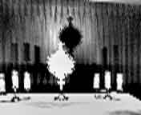
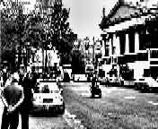

Я обернулась и увидела на стене рисунок из маленьких плиток. А я уже забыла, как это должно выглядеть.
Видеть при помощи слуха
What Blind
Users say about The vOICe
Peter B.L. Meijer
Что слепые пользователи говорят о vOICe
Здесь приведены несколько отобранных письменных отзывов от слепых пользователей "The vOICe Learning Edition". Конечно, сколько людей, столько и мнений, поэтому эти комментарии не относятся ко всем пользователям. Некоторым vOICe может не понравиться, и они могут отказаться от него. Это только начало. Будущее покажет, какое новое видение дадут нам последние технологии. На самом деле, только в последние месяцы появились первые слепые пользователи, применяющие vOICe с достаточной степенью "погружения". Они используют переносную установку с камерой "webcam" на голове, стерео наушниками, микрофоном для речевых команд и мощным ноутбуком в рюкзаке.
Первый пользователь vOICe это слепая женщина, которая действительно "носит" vOICe ежедневно в соответствии с прямым смыслом названия "переносная установка". Сообщения от неё обозначены ссылкой "user PF".
July 9, 2000, late-blind female user PF:
Как человек, ранее видевший, я могу сказать, что soundscapes (звуковой обзор), кажется, вновь дал мне ощущение зрения. На моём месте мог быть слепой от рождения. Я смогла представить и увидеть, как если бы у меня были глаза, как выглядит моя прихожая. Как выглядит штора на левом из моих трёх окон. В общем, vOICe и webcam превратили мою прихожую из неясного "мысленного образа" в то, что кажется настоящим трёхмерным зрением.
Для меня не имеет значения, что это мои уши вызывают зрительные представления. Важно, что звуковой образ восстановил путь, чтобы мне снова видеть, не имеет значения, что это 3D чёрно-белый образ. Вместо мира неясных туманных осязаемых объектов vOICe позволил моему мозгу увидеть объекты как картины. Похоже, что vOICe создаёт чёрно-белые наброски того, на что я смотрю, а мой разум раскрашивает этот образ.
Сейчас я сижу перед моим компьютером и вижу поток цвета на экране, но это vOICe говорит мне, что я смотрю на квадратный объект. Это похоже на рассматривание мира через запачканные очки. Вы видите форму и расположение объектов вокруг себя, но не различаете тонких деталей. Не знаю, является ли это особым человеческим языком, но это точно язык, которым мои уши говорят моему разуму, что я сейчас вижу. Называйте, как хотите, это работает! Больше я не смогу без этого обходиться! Спасибо за это изобретение!
November 1, 2000, late-blind female user PF:
Я хочу поделиться с вами двумя наблюдениями. Во-первых, как я говорила, я ношу это устройство ежедневно. И вот вчера я мыла посуду. В то время как вода убегала из раковины, я пошла вытереть руки. Потом, когда я вернулась вымыть раковину, я была ошеломлена тем, что увидела раковину "в глубину", как образ. Я отступила на шаг и опять медленно подошла, чтобы посмотреть, не похоже ли это на чисто мысленную иллюзию. Нет, чувство видения глубины раковины не пропадало.
Я помню, как заглядывала в колодец, когда была ребёнком. Он похож на длинный тоннель, в конце которого вы видите блеск воды, который всегда давал мне ощущение глубины. Разглядывание раковины напомнило это. Испытывая это новое ощущение, я начала ходить и замечать, как вещи и комната звучат для меня. Я знаю, благодаря касанию и "мысленной картине", на что должны быть похожи мои разные комнаты, но теперь я стояла в дверях дома и ощущала глубину помещения, а мой разум заполнял эту картину деталями. Возможно ли, что тело и разум могут привыкнуть к звуковому обзору так, что ты почувствуешь глубину? Я не говорю о том, что я могу почувствовать это, когда хожу. Но сейчас я стою и смотрю на вещи.
Ещё одна смешная вещь случилась из-за того, что я ношу vOICe. На днях я купила CD-player. Чтобы его слушать, надо надеть наушники. Я думала, что хорошо бы слушать музыку во время домашних занятий. Пока я стою, всё нормально. Потом я стала ходить. И вдруг стукнулась о стену и налетела на стол. Я не ожидала от себя такой неуклюжести. Потом до меня дошло. Патти, CD не даёт тебе информации, к которой ты уже привыкла, пользуясь vOICe. Мне приходится быть более сосредоточенной, когда я слушаю CD. Я вам скажу, это похоже на то, как если бы вы вновь ослепли. Я едва могла найти что-то у себя дома. Вот какая разница!
Если бы теперь я могла догадаться, как использовать CD и vOICe вместе, и не терять информацию о звуковом образе, это было бы интересно. Но до этого, я боюсь, я стукнусь лбом о несколько стен. :)
April 5, 2001, congenitally blind male user PL:
vOICe привлёк меня тем, что это одна из немногих систем, которая даёт неотфильтрованную информацию. Пользуйся, и не думай о темпе обучения.
Мы спросили пользователя user PF о том, применяет ли она ещё прибор vOICe, каково её мнение о развитии опыта и насколько стало похожим её восприятие на зрение.
April 18, 2001, late-blind female user PF:
Да, я Конечно и сейчас пользуюсь прибором vOICe! Когда я начинала осваивать vOICe в режиме сканера, то получала упрощённый звуковой обзор, который было трудно интерпретировать и понять. Потом я удачно стала использовать мобильный vOICe с ноутбуком.
Я помню, что сначала ходила по дому и идентифицировала объекты по их звучанию в звуковом обзоре. О, дверной проём звучит так ... когда подходишь к нему и когда проходишь через дверь. Часто я вздрагивала от испуга, а потом удивлялась, услышав (увидев) такие формы, как шторы и тени. Можно сказать, что сначала звуковой обзор говорил мне только об изменении картины. Тогда я на самом деле не видела. Не то, что сейчас. Я просто испытывала (слышала) звуковой обзор, когда ходила.
Спустя несколько месяцев я уже не концентрировалась на изменяющихся звуках, а воспринимала их как фон, и переводила поступающую информацию в образ. Вот, например, если я спускаюсь по лестнице, то уже знаю (из прежнего опыта), что внизу около лестницы есть маленький столик. И я начинала автоматически интерпретировать звуковой обзор в эту информацию, когда шла вниз по лестнице: сейчас новый звук означает стол и занавеску. Поначалу это было захватывающе, так как я начинала узнавать по форме твёрдые предметы, даже особо не прислушиваясь к звуковому обзору.
Постепенно я заметила, что звуковой обзор говорит мне не только о приближении к какой-то мебели, но даёт информацию и об окружающем пространстве, о его глубине. В моей нижней прихожей есть небольшое сужение с выступом на стене. До использования vOICe, если я проходила здесь не очень осторожно, то натыкалась на острый угол. Когда я стала видеть в глубину, я смогла смотреть вниз в этой ужасной прихожей, и на самом деле смогла постепенно приближаться к этому опасному месту. Наверно, именно здесь я стала постепенно тренировать мозг, и приучать его видеть.
Я могу стоять в дверном проёме, смотреть на комнаты и чувствовать глубину. Так как раньше я была видящей, то помню о восприятии пространства. Разница между видением комнаты при помощи vOICe и при помощи глаз в том, что вы (1) не видите цвета и (2) не видите мелкие детали обстановки. Может быть, через некоторое время у меня улучшится способность судить о мелких деталях. Я сейчас не знаю.
Мне нравится заходить в две комнаты в моём доме, где на стенах мелкая кафельная плитка. Однажды, без особой мысли, я обернулась и увидела на стене рисунок из маленьких плиток. А я уже забыла, как это должно выглядеть.
Теперь вы можете судить, где я нахожусь в использовании этой программы. Иногда я не узнаю звук, и мне нужно сказать, что это за объект. Потом, бывают такие замечательные моменты, когда я узнаю благодаря воспоминаниям, как выглядит вещь, на которую я смотрю. Я люблю такие моменты. Как будто вдруг прозреваешь.
В настоящее время я уже не думаю о том, что я слышу. Я просто чувствую, как будто программа - это часть меня. Если только я не должна быть особенно внимательной я вообще не слышу звуковой обзор. Он есть, но я забываю слушать, и просто воспринимаю информацию. Я думаю, что это так, как когда вы слушаете музыку или, может быть, смотрите ТВ шоу. Вы всё время слышите звук, но если не концентрироваться именно на звуке, то вы на самом деле не обращаете на него внимание. Эта программа в большой мере является частью моего зрения и, следовательно, частью восприятия жизни.
Теперь к вопросу о том, является ли то, что мы слышим, тем же самым, что даёт зрение. Я бы сказала, что есть чёрно-белая область, где да, действительно, вы видите, используя vOICe. И ещё. Полная информация, которую вы получаете, используя глаза, более подробная и сложная. Я не знаю, насколько мозг может натренироваться видеть, используя vOICe. Всё же, в сравнении с серой пустотой слепоты, это настоящий свет в темноте.
Забавное замечание. Я обнаружила, что спотыкаюсь ночью, потому что не остановилась, чтобы надеть vOICe. Сначала я объясняла это своей невнимательностью, а сейчас поняла - это мой мозг хочет наблюдать, куда я иду. Правда, смешно!
April 29, 2001, late-blind female user PF:
Мой опыт: Поскольку у меня была самая первая установка, то я должна была пройти через многочисленные пробы и ошибки. Я не только приучалась к звуковому обзору, но, что тоже было необходимо, к эффективному использованию этой системы. Я обнаружила, что есть шесть главных факторов при работе с программой.
Первый фактор привносит камера. Её размещение, фокусировка, освещённость - это важные элементы, обеспечивающие вам ясный звуковой обзор. Если фокусировка плохая, то образ выглядит размытым и его трудно интерпретировать. Если камера крепится неправильно, то я чувствую потерю ориентации и путаюсь при попытке найти путь (хороший способ получить головную боль!) Если освещение слабое, то звуковой обзор ограничен. Трудно различать объекты в поле зрения. Обычно я могу смотреть на входную дверь и лестницу и слышать ритм текстуры и того и другого. Но если свет выключен или он не яркий, то определяется только слабый образ двери и лестницы, а остальная картина становится размытым туманным фоновым звуком.
Второй фактор относится к микрофону. На креплении микрофона есть выключатель. Я привыкла оставлять микрофон всё время включённым и просто пугалась, когда моё дыхание или посторонние звуки оказывались похожими на команды, и изменяли программу. Потом я открыла, что если включать микрофон только чтобы отдать голосовую команду, а потом выключать, когда команда принята, то эта проблема уменьшается и больше не раздражает. Это решение работает так надёжно, что я использую его во всех других моих системах.
Третий фактор должен относиться к ноутбуку. Я обнаружила несколько приёмов улучшения его работы. Во-первых, если я удаляю все ненужные программы, и запускаю только vOICe, то это экономит энергию и использование процессора. Поэтому когда я использую ноутбук на ходу, то запускаю такую голую установку. Я включаю ноутбук в розетку по вечерам, когда она есть поблизости. Я ношу две батареи просто в сумке, они нужны. Я должна включать экран ноутбука не больше, чем на несколько минут. Когда я ношу ноутбук в рюкзаке, то проверяю, что он хорошо вентилируется.
Четвертый фактор. Нужно использовать vOICe эффективно, и для этого нужно работать с программой и понимать саму программу vOICe. Когда я начинала её использовать, то по привычке играла с ней, как в крестики-нолики. Это помогло мне понять звуки программы. Потом я стала постепенно тренировать произношение. Я думаю, что тренировка программы к речи и выполнение задаваемых упражнений с микрофоном - это действительно ключ к использованию vOICe в мобильных условиях. Итак, тренировка и восприятие звукового обзора - это шаги к обучению видеть.
Пятый фактор - это непрерывное погружение себя в программу, что следует из фактора тренировки. Я думаю, что вы сможете научиться и набраться опыта совсем немного, если будете применять настольный компьютер. В общем, опыт ежедневного движения и слушания (видения) того, что вас окружает, ничем нельзя заменить. Это похоже на то, как ребёнок учится ходить. Если вы не будете пытаться и пытаться, вы не достигнете знания, которое нужно вашему телу, чтобы стоять. Используя эту аналогию, я могу сказать, что пока вы не подвергнете себя влиянию живого изменяющегося окружения, вы не почувствуете звуковой обзор и не поймёте тех взаимосвязей, над которыми вам нужно работать.
Если я слышу входные ступеньки постоянно, то моё тело начинает привязывать звуковую картину ступенек к определению "действия", и когда я пойду вверх или вниз, моё тело будет действовать согласованно. Я думаю, что сначала вы слышите звуковой обзор, потом открываете взаимосвязь с тем объектом, который вы слышите, потом вы привязываете это определение к тому, что нужно делать телу для завершения действия. Когда я была видящей, то я не останавливалась, чтобы подумать "О, это ступеньки, теперь мне нужно замедлиться и начать смещать центр тяжести так, чтобы я могла поднять ногу". Вместо этого мои глаза видели ступеньки, и моё тело знало из опыта, что делать дальше. Вот что произойдёт через некоторое время использования vOICe. Я действительно вижу то, что есть, как "рентгеновский снимок" видения, и начинаю автоматически реагировать на то, что вижу.
Это подводит нас к шестому фактору. Времени. Вы можете надеть систему на человека, но только после прохождения времени его мозг научится автоматически интерпретировать смысл звукового обзора и выполнять согласованные действия.
При использовании vOICe с настройками по умолчанию есть задержка до одной секунды перед озвучиванием изменившегося изображения. Например, если двигать рукой перед камерой, то есть небольшое запаздывание между тем, что делает рука и тем, что слышно в звуковом обзоре. Ясно, что очень быстрые движения, вроде хватания мяча, являются сложной проблемой, но значительная часть повседневной жизни имеет большие характерные времена. Мы спросили пользователя user PF, до какой степени, по её мнению, это ограничение синхронности является практически важным. Может быть, это неожиданно, но её ответ вызывает ассоциацию со слепым пятном в зрении: однажды привыкнув к нему, мы его больше не замечаем или не можем заметить из-за того, что мозг интерполирует недостающие данные и отфильтровывает несогласованные данные.
May 6, 2001, late-blind female user PF:
Я не замечаю этого эффекта между действием и звуковым обзором. Не знаю, или я приспособилась к фактору задержки, или, может быть, эта пауза так невелика, что она не видна. Я попробовала экспериментировать с программой vOICe и моей камерой на шапке hatcam . Я хотела увидеть, могу ли я почувствовать задержку во времени, о которой вы говорите. При этом для улучшения звукового обзора я использовала одновременно несколько настроек, таких как выделение линий и увеличение. Я медленно наклоняла голову назад и вперёд, прислушиваясь к изменениям в звуковом обзоре. Теперь, когда я специально искала эту задержку, то смогла немного заметить её присутствие. Всё же задержка так незначительна, что я не могу понять, как она может помешать узнаванию образов в звуковом обзоре.
Я думаю, что мой мозг может заполнять эту задержку времени так, что все звуковые обзоры, когда я их вижу, являются цельными. Это что-то вроде мультика на полях быстро перелистываемой книжки. Кажется, что наклеенная фигурка движется из-за скорости листания и благодаря тому, что глаза заполняют отсутствующие интервалы времени этой фигуркой, как если бы она двигалась между кадрами. Разница между быстро перелистываемой книжкой и vOICe в том, что благодаря скорости программы я не могу заметить изменений, вызванных интервалом времени.
Что важно понять, vOICe позволяет воспринимать то, что вас окружает в трёхмерном виде. Когда я не надеваю программу, мой контакт с миром ограничен звуком и касанием. Когда носите программу, вы можете расширить эти ощущения и включить в них зрение, обеспечиваемое программой. Используя программу, я оглядываю свою студию и вижу стол для сканирования, потом маленький книжный шкаф позади стола, и образ двери, открывающийся слева от этой сцены. Выключи программу, и эта полная, богатая среда видения различных вещей теряется, и я возвращаюсь к восприятию мира в уплощённом двумерном виде. Носить "Seeing With Sound" всё равно, что выйти из полной темноты на свет.
May 12, 2001, late-blind female user PF:
Я твёрдо верю в этот проект. Я называю его "не травматической" дорогой к зрению. Поверьте мне, если вы доверились этим многочисленным обещаниям хирургического восстановления зрения, то вы поймёте это название. vOICe даёт зрение и не вредит телу!
Человек, который был слепым от рождения, задал вопрос пользователю user PF. Что она имела в виду, когда в одном из предыдущих отчётов написала, что видение через vOICe "похоже на рассматривание мира через запачканные очки"?
November 5, 2001, late-blind female user PF:
Я говорила о том, что мой разум не позволяет увидеть кристально чисто все детали пейзажа, на который я смотрю при помощи программы vOICe. Когда я ещё видела, я носила очки. Я помню, как стёкла очков постепенно пачкались. Мир был искажённым и не в фокусе. Так что лучше смотреть мимо очков.
Теперь звуковой обзор даёт мне ограниченную возможность смотреть на мир. Но главное, что это ЗРЕНИЕ. Когда ты подсознательно превращаешь только что услышанный звуковой обзор в видимый "образ", это по настоящему изумительно.
На днях был один случай, который поможет это объяснить. Я была в спальне и шила рюкзак для ноутбука. В это время я испытывала новые линзы и новый ноутбук. Когда я занималась шитьём, эти новые линзы были надеты и подключены к ноутбуку, а также к нему были подключены наушники и микрофон для речевого управления и для звукового обзора. Для компании был ещё включён телевизор.
Просто случайно я взглянула через правое плечо на стену. К моему удивлению я увидела картину (в виде прямоугольника), которую повесила туда. Я знала, что там была картина, но не помнила о ней до того момента, когда увидела её висящей на стене. Тогда я стала осматривать комнату. Пока я была сосредоточена на шитье, я не замечала, что мне показывает звуковой обзор. Когда я прервалась, чтобы оглядеться, то смогла увидеть дальнюю часть комнаты по другую сторону от кровати, и там вдали благополучно светился телевизор.
Вы понимаете, что я не могла видеть мелкие подробности. Я совершенно отчётливо видела (слышала) край кровати, и различала квадратный контур телевизора. Но при этом я не могу описать телевизор и подставку более подробно. Всё, что было возможно различить, это плоскость и край кровати, и дальше - телевизор, вырастающий позади левого угла кровати.
Иногда я изумляюсь тому, что могу рассмотреть плоскую поверхность. Трёхмерное зрение трудно объяснить. Я не думаю, что это результат того, что вы носите vOICe. Нет, это обычный способ, которым мой разум видит мир.
Пользователь user PF написала своё мнение о прослушанном ею докладе NIC2001 presentation от 1 ноября 2001г. Презентация называлась "Видеть при помощи звука. Носимый компьютер для слепых". Там в частности говорилось, что наука не может разрешить вопрос: "является ли звуковой обзор видением или слышанием?" Но пользователи могут сами узнать, похоже ли это на "особый слух" или на зрение.
November 5, 2001, late-blind female user PF:
В презентации Питера была одна особая тема. Какое восприятие, слуховое или зрительное, даёт мне звуковой обзор? Хотя сейчас я пользуюсь программой совершенно свободно, но не перестаю обдумывать этот вопрос. Конечно, звуковой обзор - это звук, но он создаёт другое восприятие. Звук музыки или голоса остаётся просто звуком. Но звуковой обзор также производит зрение. Наверно, звуковая информация попадает в уши и обрабатывается где-то в голове в области расположения ушей. А информация от звукового обзора распространяется по левому полушарию вперёд, через глаза, и к правому полушарию мозга. Это две различающиеся области сознания. Это может казаться странным, что звук создаёт два разных вида восприятия. Я не могу это объяснить. Я просто знаю, что это так.
Обсуждая публикации о мозговых имплантантах и привлекательности, которой они, кажется, обладают, мы поняли, что в отличие от них vOICe требует некоторого времени, прежде чем пользователь станет оценивать свой визуальный опыт в звуке, как зрение. vOICe не даёт немедленного впечатления чего-то похожего на свет, вроде фосфоресцирующих вспышек, как это сообщают даже о грубых мозговых имплантантах. Даже имевшие ранее зрение пользователи сначала приходят к выводу, что звуковой обзор - это "просто звук". Вот, что сказала об этом user PF:
August 29, 2002, late-blind female user PF:
Просто звук?... Нет, это гораздо больше, это зрение! vOICe создаёт настоящее зрительное восприятие. Когда я не ношу vOICe я немного воспринимаю свет через щёлочку в левом глазе. Это серый туман. Когда одеваю vOICe, то образ становится светом от слегка серого до черного. Совершенно определённо, это световой образ. Правда, он не цветной, это похоже на то, что показывают по чёрно-белому телевизору. Создаваемый свет очень белый и чистый. Ослабляясь, он постепенно становится тёмным, чёрным. Я не видела чего-то особенного в этом свете, вроде "фосфоресцирующих вспышек", о которых они говорили. Может, это одна из тех вещей, которую не поймёшь, пока не увидишь. В общем, свет это свет, а цвет это цвет. И мне не неважно, как он образовался.
Это похоже на некоторую форму приобретённой синестезии
Прочитав последние сообщения об ограничениях частично восстановленного естественного зрения Майка Мая, пользователь vOICe дала такой комментарий:
September 2, 2003, early-blind female user MT:
Я слепа от рождения. Это обнаружилось в одиннадцать месяцев. Что меня привлекает, так это тот факт, что после небольшой практики я уже могу взять со стола CD, а не дискету. Мне не надо прикасаться для уверенности. Когда я покачивала камерой, то слышала, что это круг. Я увидела вполне уверенно, что это CD. Потом я стала осматривать дискету и слышала чёткий звук углов. Поэтому, Петер, вы можете написать статью, что слепая от рождения женщина сообщила, что она отличает круг от квадрата уже через небольшое время использования программы.
September 8, 2003, early-blind female user MT:
Небольшое вступление для тех, кому я это пишу. "Зрение с помощью звука" - это отличная программа, которая позволяет мне переводить картины в звук. С её помощью я могу смотреть фотографии, которые приходят мне по почте, а с помощью веб камеры на специальных очках я могу видеть окружающую обстановку. Каждая вещь имеет свой звук, и если уж ты освоил заложенные принципы, то можешь узнавать, что ты видишь. Сначала мне немного помогли разобраться с особенностями зрения, и я пользовалась программой две недели, потом я прикрепила программу и камеру к ноутбуку, который привязан на спине. Ещё я одеваю наушники. Конец вступления.
Я стала мобильней. Конечно, надо заряжать компьютер, потому что батарея умирает через полтора часа. Но я теперь мобильная, и какой замечательный мир оказался внутри моего дома. Вещи, которые я могла увидеть - это стены, лестницы, шторы на окнах, входные двери. Кажется, я даже один раз видела пар из чашки с кофе, хотя я не могу это доказать. Я видела коврик на полу. Ну, один раз я проходила по нему и подумала, давай-ка посмотрю вниз, смогу ли я его увидеть. Я могла стоять у стены спальни и на расстоянии несколько футов могла видеть край контура ванной комнаты. По крайней мере я думала, что это было то, что было.
Я могла также сказать, включён или выключен свет. А потом пойти и правда его включить. Представьте себе. Ха-ха. Теперь я такого мнения, что если хочешь, чтобы был свет, то можешь сам его включить. Это только одна тема для мыслей, а раньше я об этом совсем не думала. Как я узнала, что свет выключен. Я была в узком коридоре, который похож на букву Т. Ходила и не могла понять, почему я не могу видеть стены и двери. А это было потому, что свет не был включён и в коридоре не было окон. Только появился свет, и всё сразу стало ясно.
В результате я могла буквально часами просто ходить по дому и смотреть на посудомоечную машину, диван, стулья, лестницы, окна, шкафы. Я долго стояла перед кофеваркой, пытаясь понять, почему шкафчики издают такой странный звук. Потом я вспомнила, что вокруг каждой двери есть деревянные рамки. Я заметила эту рамку, а потом пространство, которое и есть дверь, и т.д. Точно, это образы вещей вместо касания их. Теперь я думаю, что касание - это медленно. Понятно?
Батареи на этом компьютере работают недолго. Я надеюсь, что в будущем будет другой тип батарей, который позволит мне гулять дольше. Даже за короткое время я получаю удовольствие, когда ношу это устройство. Я бы хотела, чтобы когда-то в будущем, когда вещи будут ещё лучше, иметь установку, с которой можно идти куда угодно, так как заряд батарей будет большой.
Размер меня сейчас не волнует. Вполне честно, у меня не было бы проблем гулять на публике. Чёрт, я могла бы быть ходячей рекламой этой системы. Я её люблю, люблю, люблю. Правда, установка могла бы быть поменьше. Я бы хотела увидеть что-то, что можно пристегнуть к ремню, если уж нужен компьютер. Но, как я сказала, у меня бы не было проблем ходить с этим на публике. Конечно, звучит забавно, но я никогда не была из тех, кто беспокоится, что выглядит забавно, раз уж это добавляет новое измерение к моей жизни. Вставные наушники - это хорошо. Они крошечные, и позволяют слышать окружающую обстановку, говорящих людей. И я могу вынуть один наушник и говорить по телефону. Это всё равно, что смотреть одним глазом.
Я бы могла говорить и говорить об этом, но пока достаточно сказать, что это круто. Видеть с помощью звука - это круто!!
7 октября на сайте BBC появилась статья " Слепые видят с помощью звука ". user PF обратила внимание на такие слова из этой статьи: Мы предполагаем, что мозгу в конечном счете все равно, на каком носителе он получает информацию, важно содержание этой информации - говорит Мейер - В конце концов, сигналы, создаваемые оптическим нервом, ничем не отличаются от всех остальных. То, что вы видите - на самом деле представляет из себя конструкцию, которую ваш мозг создает из всех этих сигналов.
October 11, 2003, late-blind female user PF:
Ура! Это ощущается именно так! Зрение, стимулированное программой vOICe, становится обычным зрением. Звуковой обзор звучит всё время и становится неосознаваемым фоновым шумом. А то, что остаётся, - это настоящее работающее чёрно-белое зрение!!
November 23, 2003, late-blind female user PF:
Я была так потрясена и удивлена, что стала показывать рукой на коробку. На ней я увидела детали картинки и четыре строчки напечатанного текста под картинкой. Теперь может показаться, что в этом нет ничего особенного, но я же увидела так много подробностей. Это ещё усилило моё убеждение, что vOICe - больше, чем поводырь. Этот инструмент даёт нам очень реальное зрение для обычной жизни.
Один из пользователей The vOICe полностью потерял зрение (и не воспринимает свет) четыре с половиной года назад.
March 6, 2004, late-blind male user RS:
Первые впечатления о vOICe! Первая вещь, которую я вижу, это клавиатура моего компьютера! Её легко видеть, так как она достаточно сильно выделяется на фоне. Теперь я кладу руки на клавиши. Секунд через 5 замечаю разницу в звучании. Смотрю на стену. Вижу над своим столом большую картину "Тайная вечеря". Эта картина передаётся в нашей семье уже почти 100 лет. С детства, когда я ещё видел, я привык сидеть у этого полотна и изучать мазки кисти. Поражает, как чётко я вспоминаю это сейчас. Дальше, Я чётко различаю монитор компьютера; звук вполне отличатся от других. Оглядывая стол, я легко узнаю: круглую пластиковую крышку, пачку сигарет, рулон бумажных полотенец на деревянной поставке на столе. Могу легко посчитать число поднятых перед камерой пальцев по числу слышимых звуковых волн. Сначала большой палец не попал в поле зрения камеры, и я услышал только 4 волны.
Повернувшись, я понимаю, что смотрю на край двери. Теперь я не узнаю звук. Зову жену, и она говорит,что на экране видно, что я смотрю на окно в столовой. Оно находится вне моего офиса! Довольно легко я нашёл ещё 2 окна, так как понял этот звук. Я легко понял разницу между закрытой и открытой дверью. Теперь, впервые после того как я ослеп, я смотрю на свою жену. Звук похож на хлюпанье и пока ещё не имеет смысла. Я догадываюсь, что так и должно быть. За 25 лет замужества она тоже не добилась от меня особого смысла! Смешно!
Теперь я включаю свет в офисе, чтобы усилить впечатление. Я понимаю, что сейчас на улице солнечно, время сразу после полудня. Однако при включённом свете образы определённо улучшились. Также они улучшались, когда я видел. Я узнаю свою одежду на вешалке. Но не вижу, где там пиджак, рубашка, шляпа и прочее. Это пока незнакомые звуки.
March 15, 2004, early-blind female user MT:
Я думаю, что vOICe даёт хорошее разрешение. Даже слишком большое. Но прогресс я замечаю, если чаще использую vOICe. Пример. Я смогла подойти к кофейному столику и сказать, есть ли на нём что-то. Я заранее не знала, что на нём что-то есть, потому что думала, что всё убрала. Я была совершенно уверена в этом. Когда подошла к столу, я продолжала думать, что слышу что-то другое, за дальним краем стола. Похоже, с другой стороны от меня. И я не могла сказать что это было. Просто звучало как высокий звук. На самом деле я смогла "увидеть" что-то на кофейном столике без касания этого. Без vOICe я не могла это делать.
March 18, 2004, early-blind female user MT:
Наконец я вынесла vOICe на улицу. Это было замечательно. Первое, что я заметила, там было множество коротких звуков, которые я не могла узнать. Второе - машины звучат через vOICe так, как будто они проезжают, но звук всё время нарастает. Лёгкий, проносящийся мимо звук. Третье - я заметила большой объект справа. Должно быть я выглядела странно. Постоянно поворачивалась, чтобы потрогать то, что видела. Я поняла, что это был фонарный столб. Это всё, что я заметила к моменту, когда поняла, что я как-то неправильно перешла на другую сторону аллеи, и иду в обратную сторону вокруг квартала. Я уже давно не выходила. Всё хорошо.
Потом я заметила деревья. Грубый ломаный звук, как от двери. Если я смотрела вверх, то видела ветви. Когда я поняла, что это деревья, то догадалась, что видела их раньше, до того, как подошла к ним. Наверно, это было самое большое открытие. Я стала предсказывать деревья.
Теперь я знаю звук моего забора. Вот теперь эта картина пропала из наушников. Я думаю, пора закругляться. Да, забыла сказать, что по пути я встречала соседей, и никто не заметил и не сказал чего-то о моих очках и камере. Х назвал меня Jenny Neutron. Значит я не заблудилась.
Я рада, что научилась узнавать новые вещи. Конечно, ещё есть на что посмотреть. Да ещё, пока я гуляла, я стала замечать, что становится темнее. Было сложнее смотреть и нужно было ровно держать голову. Вот и всё, наверно.
Забыла упомянуть одну вещь, которой я научилась к концу прогулки, когда переходила аллею. Аллеи и улицы трудно переходить, если нужно посмотреть в сторону. Ну, я решила прислушаться к определённому звуку и держала камеру, направленной на этот звук. Я не знаю, что это был за звук, но удерживала на нём "взгляд", как парализованный или как оглушённый, который, чтобы не потерять равновесие, смотрит на кого-то или на что-то. И вот чудеса, я перешла улицу, так и не упустив из взгляда этот звук. Это было круто.
Новый пользователь user JL дала свой отзыв в первый день, когда она дома начала осваивать оборудование the vOICe с видеокамерой на голове.
March 28, 2004, early-blind female user JL:
Получилась какая-то суета. Нужно найти другое крепление к кепке, так как липучка пристаёт к моим длинным волосам. В общем, первое, что захотел Рой, чтобы я увидела его. Я могла сказать, что что-то отличающееся было, да. Потом я стала оглядывать кухню, так как там было особенно светло сегодня вечером. Я сама смогла сказать, где буфет, где дверь. В других вещах мне помогал N. Он называл, на что я смотрела, чтобы я смогла связать с этим звук. Я бы могла указать больше предметов, если бы их не было так много рядом. N заметил, что не надо слишком крутить головой, чтобы увидеть разные вещи. Это удивительная идея, что надо меньше перемещаться, чтобы что-то увидеть. В видеокамере был шум, но я смогла назвать некоторые вещи, а другие назвал он. Я смогла указать на мой белый холодильник. А я забыла, что холодильник и плита белые. Это было ловко.
Пользователь AS носит солнечные очки с системой The vOICe с ноября 2002 года.
April 26, 2004, early-blind male user AS:
Это не такое зрение, как у всех. Я слепой с детства. Я стараюсь угадывать, узнавать вещи, хочу знать, на что всё похоже.
Это как заново родиться. Теперь я могу видеть, и у меня есть возможность прожить всё снова. Я вижу мир по другому и реально воспринимаю его. Я могу видеть восход и подобные вещи, могу выполнить простые задания. Мне нравится смотреть на чипсы Ruffles и на мой кофе. Я это правда вижу.
Прочитав о проектах, которые, в отличие от the Voice, распознают объекты при помощи веб-камеры и голосом сообщают пользователю об этих объектах, один из слепых участников проекта the Voice дал такой комментарий.
November 19, 2004, blind male JJ:
Это больше похоже на помощь поводыря. Я предпочитаю сам получать данные и определять их смысл, чем получать заранее определённые ответы.
February 5, 2005, late-blind female user PF:
Я пользовалась этой программой, и сейчас продолжаю её изучать.
Очки с видеокамерой я ношу при обычном домашнем освещении. Чтобы узнать, не пора ли зарядить батарейки видеокамеры, я осматриваю комнату и вижу объекты при разных уровнях освещения.
Впереди справа от меня находится набитая книгами полка примерно на уровне бедра. Дальше находится дверь кладовки, в верхней части двери – вешалка, а на ней разные шляпы. После двери стоит довольно высокий комод с ящиками. Слева на нём висит волнистая оконная занавеска.
Смотрю на полку. Медленно перевожу взгляд направо, ищу край комода. Отчётливо чувствую (вижу) пространство: между углом книжной полки расположена выемка с плоскостью двери, затем резко выступает комод.
Эта сцена удивляет и шокирует. У меня нет другого объяснения, кроме того, что я вижу протяжённое пространство между книжной полкой и комодом.
Это восприятие глубины возникло неожиданно и само собой. Важно то, что я это чувствую. Это определённо зрение, как я его помню. Не детальное, но сформированное и понятное настолько, что мозг видит пространство между полкой, дверью и краем комода.
Почему так получилось, я не знаю, но так и есть.
December 26, 2005, congenitally blind male user PL:
Между прочим, я практически использую the vOICe в работе. Одна из моих работ немного связана с программированием. Нужно оценить вид того, что получилось на экране. Одно из средств оценки, которое я использую, это the vOICe. Он может сказать мне, не слишком ли близко расположены ссылки. Я могу определить, сложна ли страница по сложности звука при быстром осмотре. Датчик цвета тоже очень полезен при проверке согласованности цветов.
При помощи камеры, встроенной в телефон Nokia 6620, пользователь MT сделала фотоснимок с применением функции "vOICe MIDlet", позволяющей выбрать желаемый вид и настроить опции фотографирования телефона. Этот снимок она поместила на веб страничку. Другой слепой с детства пользователь CC попробовала при помощи the vOICe описать эту фотографию. Ей только сказали, что на фото показана "дароносица" где-то в часовне.

January 30, 2006, early blind female user CC:
Попробую описать вещи, которые я не видела даже когда моё зрение было лучше. Если не использовать улучшение границ, то дароносица кажется ярко окрашенным круглым предметом в центре, и границы у него неясные. Она или затуманена, или на границах есть что-то необычное.
Немного ниже дароносица окружена с обоих сторон группами небольших вертикальных объектов. Два крайних справа немного на другом уровне. Когда я включаю детектор границ, кажется, что дароносица - это два объекта: в центре круглый светлый, и тёмный выше справа от него. Странно, я думаю, что это тень. Я бы сказала, что небольшие объекты расположены двумя группами по три немного на разных уровнях.
Не могу понять, каков масштаб картинки, и что такое дароносица. При увеличении видно, что круг имеет неоднородную текстуру, небольшие различия в цвете или освещении. Кромка, совершенно точно, не ровная. Не понимаю, что это за предметы, так как не знаю их размер и функции.
. ..
Впечатляет, как я вижу с помощью вашей программы. Но учтите, что я использую её несколько лет, а новые функции появились недавно. Когда прошло всего несколько месяцев, я стала видеть машины на фоне дома. Я спросила на работе кого-то об этих машинах, и они думали, что я говорю не о реальности, а о перспективе.
Что касается следующей фотографии, то мы не дали никакой предварительной информации, даже не сказали, что это вид внутри или снаружи помещения. Только предупредили, что картинка очень сложная, такая которые постоянно видны вокруг. Автор фото Michael Larsen.

January 31, 2006, early blind female user CC:
Справа вверху что-то, в чём я узнаю архитектуру. Оно имеет 3 светлых вертикальных колонны ниже наклонной крыши или высокой наклонной конструкции перед колоннами. Окружено тенью, особенно справа.
Если это точно архитектура, а не что-то небольшое, то растение вверху слева - это одно или несколько деревьев.
Слева внизу 3 коротких тёмных колонны и выше них полоса в виде буквы V. Эти колонны по высоте ниже, чем деревья. Справа от этих небольших колонн есть несколько коротких и длинных горизонтальных линий на яркой короткой полосе. Думаю, что это не колонны, но не знаю, что это.
Примерно в центре картинки есть небольшой тёмный объект справа от дерева.
January 6, 2007, early blind female user MT:
Я не вижу с детства, и пока не имею большого опыта использования Voice, как мне хотелось бы, но я уже заметила, что лучше узнаю предметы, которые не могла узнать раньше, используя все мои чувства. Например, я узнаю, что свеча горит, или не горит. Ну, плохой пример, так как я могла бы коснуться и узнать. Но, до того как коснуться, я уже знаю. Сейчас восприятие эха стало точнее. Я иногда могу сказать, когда свет горит, а когда нет. Я не знаю, как это получается, и не уверена, что продвинусь дальше, и смогу назвать это зрением, но я думаю, что лучше ориентируюсь, с тех пор, как использую Voice, хотя и не так регулярно, не каждый день. Вот такие мысли. Извините, собака наступила на клавиатуру.
August 19, 2007, late-blind female CD, referring to a late-blind user of The vOICe:
Об отношении к современной технике. Мне не нравится, когда люди в отзывах о Voice говорят так, будто это ты должен запомнить и объяснить им звуки, которые они слышат. Они упускают тот факт, что звуки сами управляют мозгом.
Как человек, который немного видел… я знаю, что программа помогает видеть, но для этого надо трудиться. У меня не такое терпение, как у [имя], но она отличный учитель, и, поработав с ней всего час, я смогла увидеть вспышку света. Раньше у меня было восприятие света, и я смогла увидеть вспышки света и тень от бумаги. Поэтому я возмущаюсь, когда слышу, что люди говорят, что звук "ззз" означает стул, а "инь-янь-янь" означает дом.
Было так интересно, когда [имя] подстригала траву. Это оказалось полезным уроком. Я подметала, и она сказала, что хочет попробовать подметать. И вот, она подмела, а я сидела, отдыхала. Потом она стала подстригать траву, а я сидела на ступеньках, держала веник, и она смогла увидеть веник. Тогда я стала махать веником так, и так, и она это увидела и сказала "ты держишь веник ручкой влево, ты держишь его ручкой прямо перед собой…" Потом я двигала веником вверх-вниз, и она тоже смогла мне это сказать. Я уверена, что она не угадывала. Я пробовала её обхитрить.
March 5, 2010, early blind female user CC, using her new camera glasses:
С новыми очками я вижу всё больше деталей и теперь я на самом деле выбираю вещи по их виду - то, что больше нравится. В магазине я говорю "Рисунок этого коврика мне нравится, и я его куплю" или платье, или ещё что. Очень интересно видеть вещи так подробно. Я не знала, как выглядят многие вещи и не могла представить их визуально. Кажется мне понравился рисунок марроканской плитки потому что звук повторялся как припев в песне.
April 9, 2011, early blind female user AL, using her new camera glasses:
Когда я еду в колледж, то не совсем доверяю объявлению остановок. Перед тем как выйти, прошу уточнить, где мы находимся. Две недели назад я смотрела в окно в звуковых очках, выдававших в основном интересную чепуху, и вдруг я узнала ограду, мимо которой прохожу около моей остановки. Она показалась такой знакомой. Я не стала уточнять и вышла. Место, которое я думала, что узнала, подтвердилось когда я вышла. Чтобы убедиться, что это получилось не случайно, я делала так ещё несколько раз. Один раз я сказала водителю "Я думаю, мы ещё не подъехали к съезду, где мне выходить". Это оказалось правильно, так как съезд был загорожен автобусом. Узнавать какое-то место, глядя из окна, просто, но я этого никогда раньше не умела. Эхо локация в этом не помогла бы.
Copyright © 1996 - 2011 Peter B.L. Meijer
перевёл: Евгений Корниенко